Three Control Problems, One Simulated Plant
Discrete latching, sequential material handling, and analog signal conditioning — three IEC 61131-3 applications written in CODESYS and commissioned against Factory I/O 3D plant models over an OPC DA/UA link. The PLC never touches the simulator directly, exactly the arrangement used when a real controller is brought up against an HMI/SCADA layer. The headline project is a process tank whose entire job is analog signal conditioning: mapping raw transmitter counts into engineering units, and proving the transfer functions numerically against the running plant before any control law is layered on top.
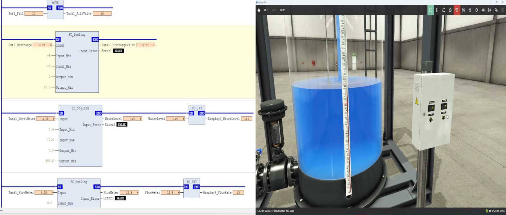
The PLC never talks to the plant.
All three projects share one toolchain. The program runs in the CODESYS soft-PLC
runtime; Factory I/O hosts the 3D plant model and exposes every
sensor and actuator as an OPC tag; an OPC DA/UA server sits between them.
CODESYS publishes the variables of PLC_PRG through a symbol
configuration object, the OPC server browses that configuration, and Factory I/O
binds each simulated device to one of the resulting items. The PLC therefore sees the
plant purely as a set of tags — the same abstraction it would have over a real fieldbus.
That link matters more than it looks. The OPC round trip adds latency on top of the PLC scan, visible in the recordings as a small lag between a tag changing in the watch table and the corresponding motion in the 3D scene. The logic is written to tolerate it — state lives in latches and counters rather than being inferred from an instantaneous sensor combination, which is the difference between a program that works at one conveyor speed and one that works at any.
That is also the argument for simulating the plant at all. Ladder logic that compiles is easy; ladder logic that behaves against real actuator travel times, sensor debounce and material inertia is not. A race between a diverter command and a photo-eye — the bug that only appears at speed — surfaces during development instead of during commissioning.
| Component | Version |
|---|---|
| CODESYS Development System | V3.5 SP22 Patch 2+ |
| CODESYS runtime | 3.5.22.20 |
| Symbol configuration object | 4.7.0.0 (library 4.6.0.0) |
| Factory I/O | v2.5.10 Ultimate Edition |
| OPC interface | OPC DA / OPC UA client |
Four networks, no Boolean logic at all.
Two operator potentiometers drive the fill and discharge valves; the level and flow
transmitters are scaled into engineering units and shown on two panel displays. Every
signal is analog, so the work is entirely in scaling — MOVE,
three FC_Scaling instances, and two TO_INT conversions across
four FBD networks.
Tank1_DischargeValve reach 10 when the centre-detent pot hits its full-clockwise stop at Pot2_Discharge = 5.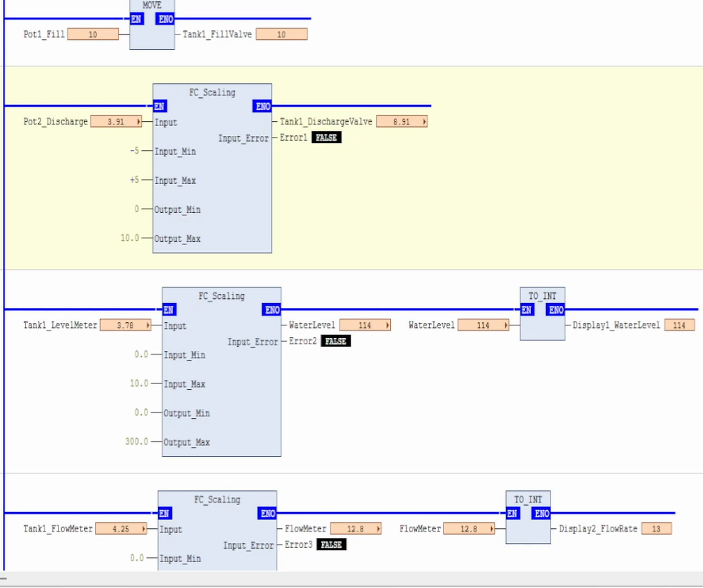
Error1–Error3 all read FALSE.| # | Function | Input range | Output range | Destination |
|---|---|---|---|---|
| 1 | MOVE | Pot1_Fill | pass-through | Tank1_FillValve |
| 2 | FC_Scaling | −5 … +5 | 0 … 10 | Tank1_DischargeValve |
| 3 | FC_Scaling → TO_INT | 0 … 10 | 0 … 300 | Display1_WaterLevel |
| 4 | FC_Scaling → TO_INT | 0 … 10 | 0 … 30 | Display2_FlowRate |
Why network 2 is the interesting one
The discharge potentiometer is a centre-detent device: it reads −5 at one
stop and +5 at the other. The valve, like every valve, only travels one way — 0 to 10.
FC_Scaling maps the bipolar span onto the unipolar one:
Networks 3 and 4 run the other direction — raw 0 … 10 transmitter signal into the units
printed on the tank's gauge board — then TO_INT converts to the display's
integer type. That conversion rounds rather than truncates, which the
sampled values make plain: a flow of 18.7 shows as 19, and a level of 0.0997 shows as 0.
Verifying the transfer functions against the plant
Scaling parameters are easy to get wrong and impossible to spot by inspection, so both transfer functions were checked numerically against live values sampled from the online view at three points across the run:
| Tank1_LevelMeter | Expected (×30) | Observed | Display1_WaterLevel |
|---|---|---|---|
| 3.86 | 115.8 | 116 | 116 |
| 3.58 | 107.4 | 107 | 107 |
| 0.00337 | 0.101 | 0.0997 | 0 |
| Tank1_FlowMeter | Expected (×3) | Observed | Display2_FlowRate |
|---|---|---|---|
| 2.62 | 7.86 | 7.87 | 8 |
| 5.98 | 17.94 | 17.9 | 18 |
| 6.22 | 18.66 | 18.7 | 19 |
Both transfer functions match to within display rounding across the full span. The highlighted rows are where the INT conversion is visible.
Each FC_Scaling instance also drives an Input_Error output.
Error1, Error2 and Error3 read FALSE throughout the
recording, confirming that no transmitter ever left its declared span — the range check
is part of the evidence, not an afterthought.
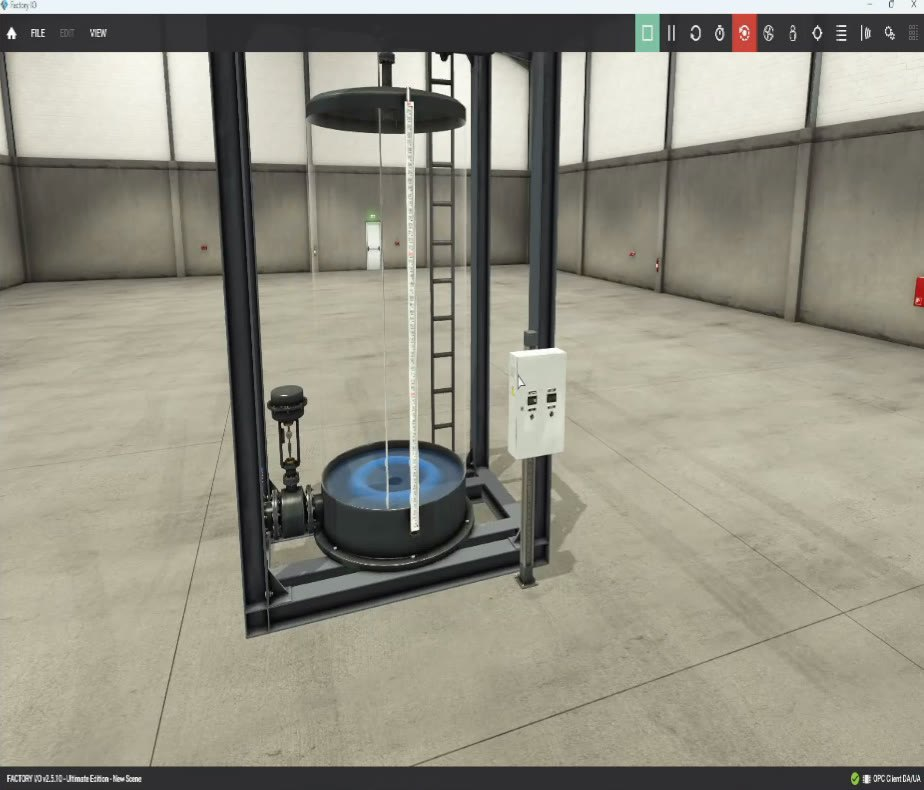
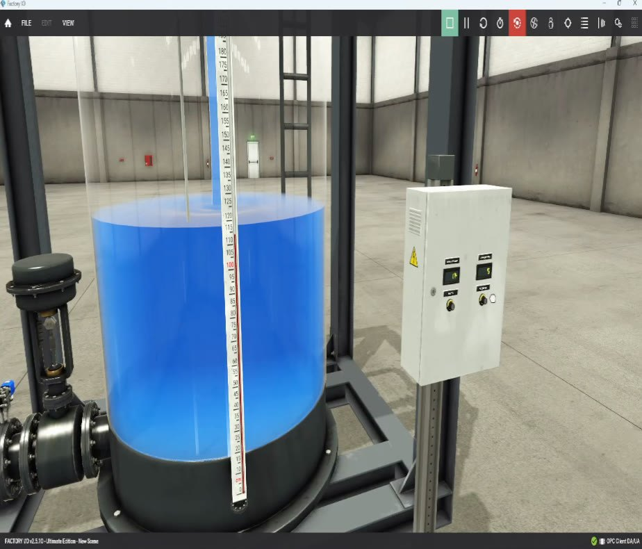
This project is open-loop. There is no PID block, and none is claimed.
The operator closes the loop by watching the displays and turning the potentiometers.
That is the right starting point rather than a shortcut: a regulator tuned against a
mis-scaled transmitter will look perfectly stable and still hold the wrong setpoint.
The obvious extension is to drive Tank1_FillValve from the error between a
setpoint and WaterLevel, keeping the discharge valve as a manual
disturbance — and the scaling networks would carry over unchanged, which is the whole
point of separating signal conditioning from control.
The smallest piece of memory in ladder logic.
Drive a belt conveyor from a two-button station: a momentary Start must latch the drive on, releasing it must not stop the belt, and Stop must break the circuit at any time. Six BOOLs, two networks.
FIO_B reads 0 while FIO_C stays 1. The latch is holding the drive, not the button.
Three things are load-bearing here. The C contact in parallel with
B feeds the coil's own state back into the rung, so the latch — not the
button — holds the drive. A sits in series ahead of that parallel
block, so Stop can never be overridden by holding Start. And A is evaluated
through a normally-closed contact, mirroring real wiring practice: a broken wire to the
Stop button de-energises the rung rather than disabling the stop function.
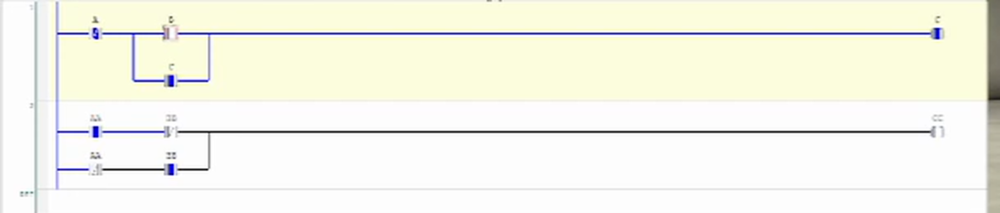
C; network 2 is correctly blocked because both XOR inputs are TRUE.
The tag trace is the proof. B reads 0 in every sampled frame — the Start
press is momentary — yet C stays at 1 until A is asserted, at
which point the rung breaks. Meanwhile CC stays 0 throughout because
AA and BB are both 1, which is the correct XOR result.
| Time in run | A | B | C | AA | BB | CC | State |
|---|---|---|---|---|---|---|---|
| start | 0 | 0 | 0 | 1 | 1 | 0 | idle, belt stopped |
| after Start | 0 | 0 | 1 | 1 | 1 | 0 | latched on, Start already released |
| end | 1 | 0 | 1→0 | 1 | 1 | 0 | Stop asserted, rung breaks |
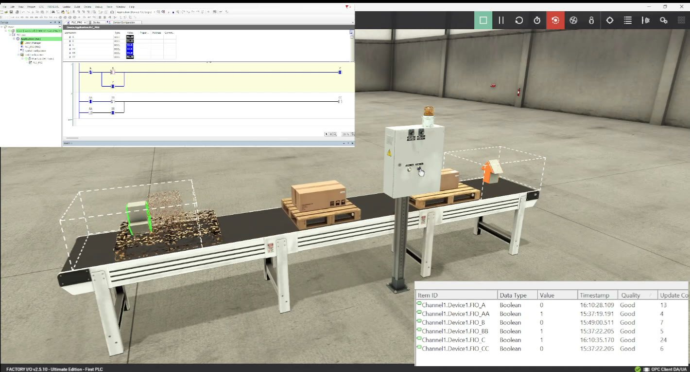
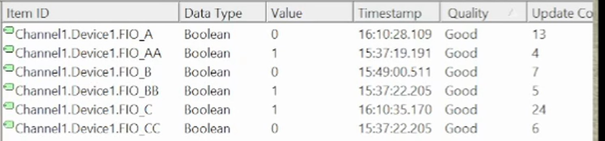
A and C confirm the link is live, not cached.The routing decision cannot be computed from the current sensor vector.
A pallet-handling line loads a box, measures its height, routes it down the left or right
lane, and tallies throughput on a panel display. Nineteen tags — eighteen BOOL plus a
WORD for the display — driving five RS latches and two
CTUD counters.
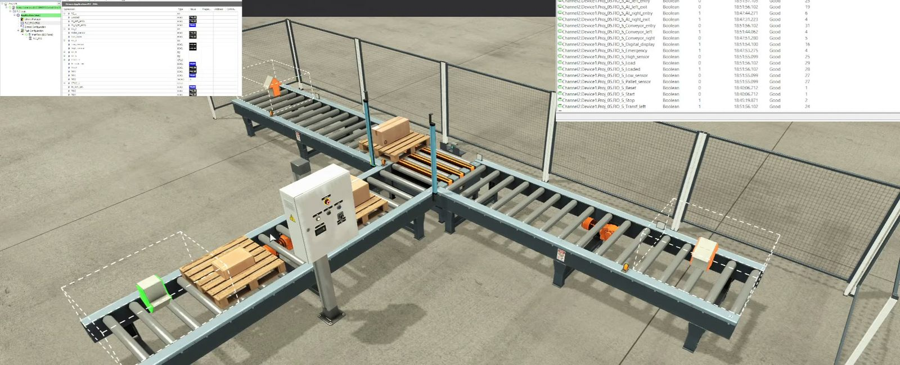
The height sensors sit upstream of the junction. By the time a pallet
reaches the diverter the beams have already cleared, so a live sensor read at the
junction would always fail. RS_2 latches the classification at the moment of
measurement and holds it until the transfer completes — that latch, not the sensor, is
what makes the routing independent of conveyor speed.
RS is the reset-dominant bistable: when Set and Reset are
asserted in the same scan, Reset wins. For a sorting station that is the safe polarity —
if a stop or emergency condition coincides with a set condition, the state clears rather
than latching a diverter on. Counting happens on the lane exit sensor
rather than the entry, so a pallet that stalls mid-transfer is never credited to the
total.
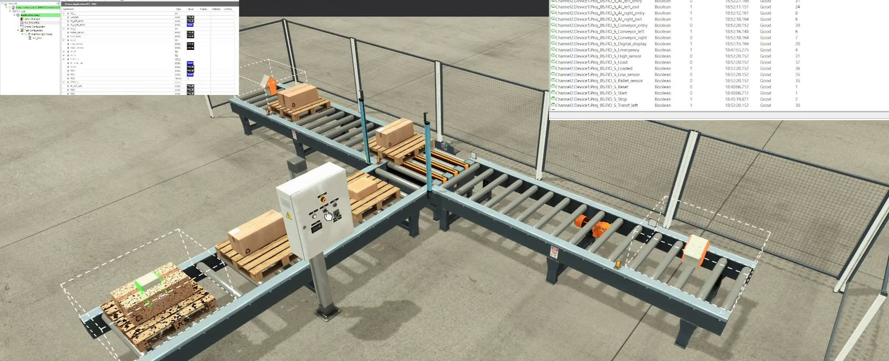
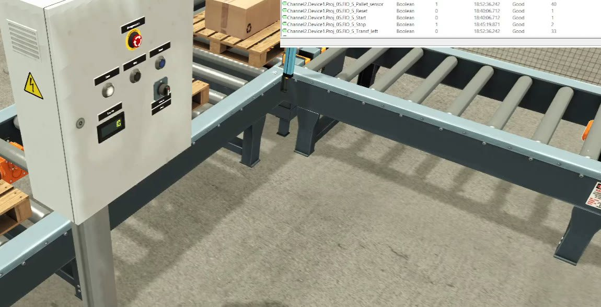
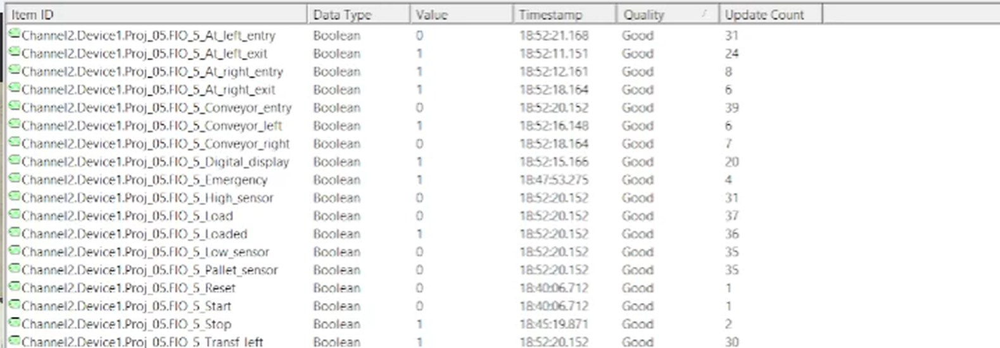
Project 05's logic is documented from its online instance tree and observed behaviour.
The full ladder is not reproduced, because it was not shown in the recording — open
Proj+05.project in CODESYS for the authoritative source. The
.project files are saved in CODESYS's own container format, so they are
neither readable as text nor diff-friendly under version control.
What these three establish.
| Project 02 | Project 05 | Project 07 | |
|---|---|---|---|
| Language | Ladder (LD) | Ladder (LD) | FBD |
| Problem class | Discrete + latch | Sequential handling | Analog conditioning |
| Signals | 6 BOOL | 18 BOOL + 1 WORD | 6 REAL + 2 INT |
| Key constructs | Seal-in, NC stop, XOR | RS ×5, CTUD ×2 | MOVE, FC_Scaling ×3, TO_INT ×2 |
| Memory strategy | Coil self-seal | Reset-dominant bistables | Stateless per-scan transform |
| Validated by | Tag trace through latch | Sort cycles + counter tally | Numerical transfer-function check |
Latching is the primitive. Project 02's seal-in and Project 05's
RS blocks are the same idea expressed two ways; choosing between them is a
readability decision, not a functional one — except for reset dominance, which
RS makes explicit and a seal contact leaves implicit in rung ordering.
Sequential logic needs memory placed at the point of measurement, because
a classification made metres upstream cannot be re-derived at the diverter.
Scaling is a first-class concern — most of the work in an analog loop
happens before any control law is applied, and it can and should be verified numerically
against live plant values. And simulation is what closes the loop on
correctness: every claim here is backed by numbers read off the running system,
not by a program that merely compiles.